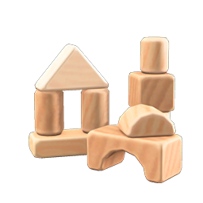

Lab 9: Styling Block Elements
Challenge
The most challenging aspect of this lab was figuring out what things I should put in divs to help style them and what things could be styled without a div. When my code wasn't working I used the inspector tool on Chrome and quickly found that I had referred incorrectly to the element.
Problems
The problem we ran into with this lab was in setting a background image. I wanted my image to be responsive, expanding and collapsing as the page size changed without repeating or zooming. We attempted to use just the background-image and background-repeat properties, but it just zoomed in on one area. I decided to Google it and found a great article on Web FX that helped immensely.
Results
This lab resulted in us figuring out how to use the background-image property in CSS to make a responsive image. I also now feel like I understand the difference between having a space or no space in between selectors. We ended up with a well functioning lab page that helped us learn how to style and understand block elements.